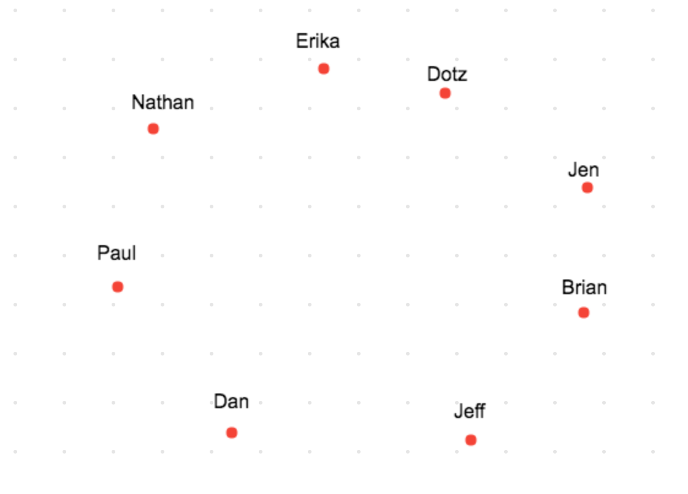
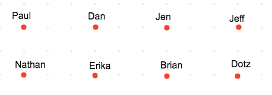
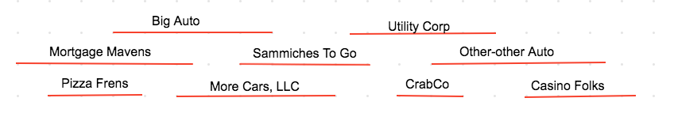
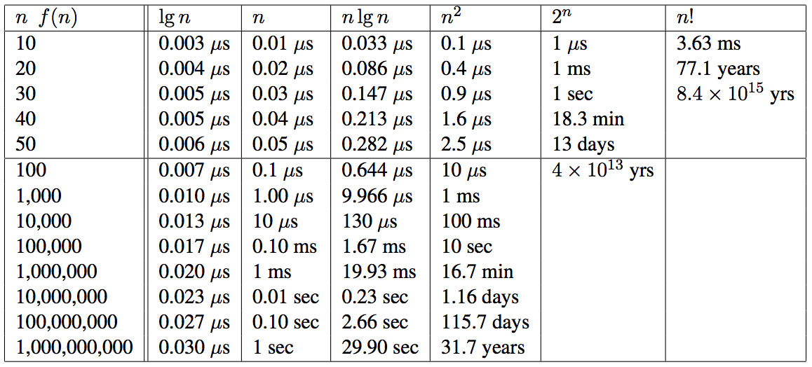

Computer Science 2: Algorithms
Detroit Labs Dev Coaching
2018
Lecture 1
Introduction to Algorithms
Specifying Problems
What is an Algorithm?
What is an Algorithm?
"An algorithm is a procedure to accomplish a specific task."
– S.S. Skiena, The Algorithm Design Manual 2nd ed.
What is an Algorithm?
- solve a general, well-specified problem
- describe the complete set of instances it must work on
- describe the output after running on an instance
Rigorous Specification
Problem: Sorting
Input: A sequence of \(n\) keys \(a_1 \rightarrow a_n\)
Output: The permutation of the input such that \(a\prime_1 \le a\prime_2 \dots \le a\prime_n\)
Algorithmic Thinking

Insertion Sort in C
insertion_sort(item s[], int n) {
int i, j;
for (i=1, i < n, i++) {
j = i;
while ((j < 0) && (s[j] < s[j-1])) {
swap(&s[j], &s[j-1]);
j = j - 1;
}
}
}
Correct and Efficient
Rok's Mail Route

Rok's Mail Route
Problem: Rok's Mail Route
Input: A set of points \(P\) of size \(n\) for which the distance between the points is known
Output: An ordering of the input such that the total distance traveled from \(P\prime_o\) to \(P\prime_n\) is shorter than any other ordering.
Nearest Neighbor
NearestNeighbor(\(P\))
Pick and visit an initial point \(p_0\) from \(P\)
\(p = p_0\)
\(i = 0\)
While there are unvisited points
\(i = i+1\)
Select \(p_i\) to be the closest unvisited point to \(p_{i-1}\)
Visit \(p_1\)
Return to \(p_0\) from \(p_{n-1}\)
Rok's Mail Route, Round 2
Closest Pair
ClosestPair(\(P\))
Let \(n\) be the number of points in the set
For \(i = 1\) to \(n − 1\) do
\(d = \infty\)
For each pair of endpoints \((x, y)\) of partial paths
if \(dist(x, y) \le d\) then \(x_m = x\), \(y_m = y\), \(d = dist(x, y)\)
Connect \((x_m, y_m)\) by an edge
Connect the two endpoints by an edge
Rok's Mail Route, Round 3

Exhaustive Search
OptimalTSP(\(P\))
\(d = \infty\)
For each of the \(n!\) permutations \(P_i\) of the set \(P\)
If \(cost(P_i) \le d\) then \(d = cost(P_i)\) and \(P_{min} = P_i\)
Return \(P_{min}\)
135! ≈ 2.690473e+230 ← 231-digit number of possible paths
Hustle Problem

Hustle Problem
Problem: Hustle Problem
Input: A set \(I\) of \(n\) intervals on the line
Output: The largest subset of mutually non-overlapping intervals selected from \(I\)
Earliest Job
EarliestJobFirst(\(I\))
Accept the earliest starting job \(j\) from \(I\) which does not overlap
any previously accepted job. Repeat until no such jobs remain.
Shortest Job
ShortestJobFirst(\(I\))
While (\(I \ne \emptyset\)) do
Accept the shortest possible job \(j\) from \(I\)
Delete \(j\), and any interval which intersects \(j\) from \(I\).
Exhaustive Search
ExhaustiveJobs(\(I\))
\(j = 0\)
\(S_{max} = \emptyset\)
For each of the \(2^n\) subsets \(S_i\) of intervals \(I\)
If \(S_i\) is mutually non-overlapping and \(size(S_i) > j\)
then \(j = size(S_i)\) and \(S_{max} = S_i\)
Return \(S_max\)
Earliest Ending Job
OptimalScheduling(\(I\))
While (\(I \ne \emptyset\)) do
Do job \(j\) from \(I\) which has the earliest end date.
Delete \(j\) and any interval which intersects \(j\) from \(I\).
Incorrectness
Good Counter-examples are:
- Verifiable
- Calculate the answer
- Show that a better answer exists
- Simple
- No unnecessary details
- Clearly shows failure
Finding counterexamples
- Think small
- Think exhaustively
- Hunt for weakness
- Look for ties
- Seek extremes
Induction and Recursion
\[\sum_{i=1}^{n} i = {n(n+1) \over 2}\] Insertion sort:
- Base case: a single element array is sorted
- First n-1 elements are sorted after n-1 iterations
- To insert: move all elements to make room for new element
Summations
\[\sum_{i=1}^{n} f(i) = f(1) + f(2) + ... f(n)\]
Modeling
- Permutations
- Subsets
- Trees
- Graphs
- Points
- Polygons
- Strings
Algorithmic Analysis
RAM Computation Model
- Operations (+, -, =, if, call) = 1 step
- Memory Access = 1 step
- Loops and subroutines = composition of their steps
Best / Worse / Average Case

- Worst-case: maximum number of steps
- (reverse order)
- Best-case: minimum number of steps
- (already sorted)
- Average-case: average number of steps
- (randomly sorted)
Which one?

Ω / O / θ Notation
\(f(n) = 2n\) is equivalent to \(g(n) = n\) in Big-O
- \(f(n) = O(g(n))\) ← upper bound / worst case
- \(f(n) = \Omega(g(n))\) ← lower bound / best case
- \(f(n) = \theta(g(n))\) ← upper & lower bound / tight case
Growth and Dominance

Dominance Rankings
\(f(n)\) dominates \(g(n)\) if:
\[lim_{n\rightarrow\infty }{g(n) \over f(n)} = 0\]
This is the same as saying \(g(n) = o(f(n))\).
n! >> 2n >> n3 >> n2 >> n × log n >> n >> log n >> 1
Reasoning About Complexity
Selection Sort
selection_sort(int s[], int n) {
int i, j;
int min; /* index of min */
for (i=0, i < n, i++) {
min = i;
for (j = i+1; j < n; j++)
if (s[j] < s[min])
min = j;
swap(&s[i], &s[min]);
}
}
Worst-case for selection sort
Outer loop goes through \(n\) times.
Inner loop goes through at most \(n\) times for each iteration of outer
Takes at most \(n \times n\) → \(O(n^2)\) time in the worst case.
This is actually \(\theta(n^2)\) because at least \({n \over 2}\) times it scans through at least \({n \over 2}\) elements, for a total of \({n^2 \over 4}\) steps.
Insertion Sort
insertion_sort(item s[], int n) {
int i, j;
for (i=1, i < n, i++) {
j = i;
while (j > 0 && s[j] < s[j-1]) {
swap(&s[j], &s[j-1]);
j = j - 1;
}
}
}
Worst case for insertion sort
Outer loop goes through \(n\) times.
Inner loop swaps at most \(n\) times.
This is also \(O(n^2)\) time in the worst case.
This is also \(\Omega(n^2)\) time and therefore \(\theta(n^2)\).
Logarithms
\[b^x = y == x = \log_b y\]
Binary Search
To find search item \(I\)
- Start in the middle (\(M\)) of a sorted set
- Compare \(I\) to \(M\), discard data where \(I\) will not be.
- Reset \(M\) to middle of remaining data.
How many times can we halve \(n\) before getting to 1?
Trees
In a tree with \(n\) leaves, how tall is the tree?
The number of leaves doubles with each level, so how many times can we double 1 until we get to \(n\)?
Bases and asymptotic dominance
\[\log_b a = {\log_c a \over \log_c b}\]
\(\log_2 1,000,000 = 19.9316\)
\(\log_3 1,000,000 = 12.5754\)
\(\log_{100} 1,000,000 = 3\)
The Knapsack Problem
Given a set of integers \(S = \{s_1, s_2, ... , s_n\}\), and a given target number \(T\), find a subset of \(S\) which adds up exactly to \(T\).
For example, within \(S = \{1, 2, 5, 7, 8\}\) there is a subset which adds up to \(T = 18\) but not \(T = 19\).
Knapsack Solutions
Find counter-examples disproving the following:
- Take elements from S in order if they fit? (first fit)
- Take elements from S from smallest to largest? (best fit)
- Take elements from S from largest to smallest?